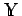
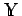

Inhalt Index DeskTop Bronstein

 Funktionalanalysis Stetige lineare Operatoren und Funktionale Beschränktheit, Norm und Stetigkeit linearer Operatoren
Funktionalanalysis Stetige lineare Operatoren und Funktionale Beschränktheit, Norm und Stetigkeit linearer Operatoren


Seien und normierte Räume. Die Kennzeichnung der Norm im Raum  , etwa durch , wird im weiteren weggelassen, da aus dem jeweiligen Kontext klar wird, in welchem Raum die Norm betrachtet wird. Ein beliebiger Operator
, etwa durch , wird im weiteren weggelassen, da aus dem jeweiligen Kontext klar wird, in welchem Raum die Norm betrachtet wird. Ein beliebiger Operator  heißt beschränkt, wenn eine reelle Zahl existiert mit
heißt beschränkt, wenn eine reelle Zahl existiert mit
Ein beschränkter Operator mit der Konstanten  ,,dehnt`` jeden Vektor höchstens um das
,,dehnt`` jeden Vektor höchstens um das  -fache und überführt jede beschränkte Menge aus
-fache und überführt jede beschränkte Menge aus  in eine beschränkte Menge aus , insbesondere ist das Bild der Einheitskugel aus
in eine beschränkte Menge aus , insbesondere ist das Bild der Einheitskugel aus  in
in  beschränkt. Für die Beschränktheit eines linearen Operators ist die letzte Eigenschaft charakteristisch. Ein linearer Operator ist genau dann stetig, wenn er beschränkt ist.
beschränkt. Für die Beschränktheit eines linearen Operators ist die letzte Eigenschaft charakteristisch. Ein linearer Operator ist genau dann stetig, wenn er beschränkt ist.
Die kleinste Konstante  , für die (12.130) noch gilt, heißt Norm des Operators T und wird mit
, für die (12.130) noch gilt, heißt Norm des Operators T und wird mit  bezeichnet, d.h.
bezeichnet, d.h.
Für einen stetigen linearen Operator gelten
und außerdem die Abschätzung
| Beispiel |
|
Im Raum |
ein beschränkter linearer Operator, der  in
in  abbildet. Für seine Norm gilt
abbildet. Für seine Norm gilt